A montanha
O lugar, o que havia antes dos espanhóis e os registros de 1545.
Geografia e geologia do Cerro Rico
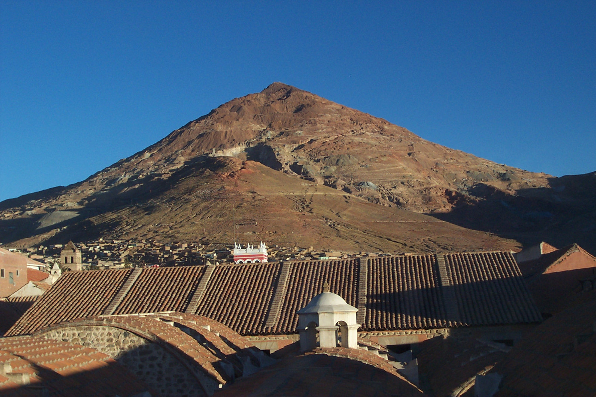
O nome Potosí designou primeiro uma montanha vermelha, de forma piramidal, no sul da atual Bolívia. A cidade cresceu ao pé dela, a cerca de 4.090 metros de altitude, e no período colonial fez parte da Audiencia de Charcas, dentro do vice-reino do Peru e, desde 1776, do vice-reino do Rio da Prata.
Os espanhóis chamaram o morro de Cerro Rico; textos bolivianos atuais usam também Sumaj Ork'o. Fontes coloniais falam em dois morros adorados, Apu Potochi e Guaina Potochi, o maior e o "jovem", ao norte. O brasão concedido por Carlos V em 1547 apresenta a cidade como tesouro do mundo e rei dos montes.
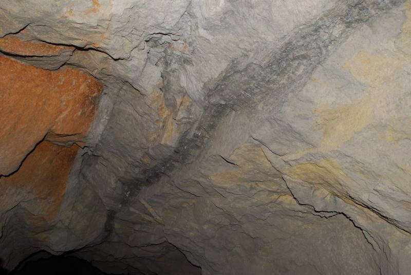
Geologicamente, o Cerro Rico é um domo de lavas riodacíticas instalado em folhelhos paleozoicos há 13,77 milhões de anos, com atividade hidrotermal de pelo menos 200 mil anos. Sua origem está no magmatismo dos Andes Centrais, causado pela subducção da placa de Nazca. A caldeira de Kari Kari, ao lado, formou-se há cerca de 21 milhões de anos.
Os veios têm zonas. No núcleo, de temperatura mais alta, ficam a cassiterita (estanho), a wolframita, a bismutinita e a arsenopirita. Na periferia ficam sulfetos de zinco, chumbo, ferro, cobre e prata. Os veios têm em geral de 10 a 50 centímetros de largura. Cieza de León listou cinco afloramentos em 1549: Rica, Centeno, Estanho, Mendieta e Oñate.
A oxidação mudou o morro por dentro. Ao longo de milhões de anos, a água transformou os sulfetos do alto em cloretos e iodetos de prata e em prata nativa, fáceis de refinar. Os mineiros coloniais conheciam a diferença na prática: os pacos, minérios oxidados, eram "metal cálido" e aceitavam bem a amálgama; os negrillos, sulfetos, eram "metal frío" e precisavam de ustulação antes.
O teor caiu sem parar. Segundo Bargalló, citado por Anezaki e Miyoshi, foi de 40% a 45% de prata em 1545 para 4% a 4,5% em 1574, 0,75% em 1607 e 0,27% no fim do século XVIII. Cada etapa técnica da história do Cerro, das huayras à amálgama e daí às galerias profundas, responde a um minério mais pobre, mais fundo ou mais difícil.
Potosí também não se alimentava sozinha. Acosta relatou a falta de grãos, ervas e frutos; só cresciam o quishuar e o ichu, gramínea que servia de forragem e de combustível. A região importava quase tudo o que comia, e o comércio de víveres chegou a rivalizar em lucro com o próprio Cerro, segundo Cobb, citado por deFrance.
A prata antes dos espanhóis e as huayras
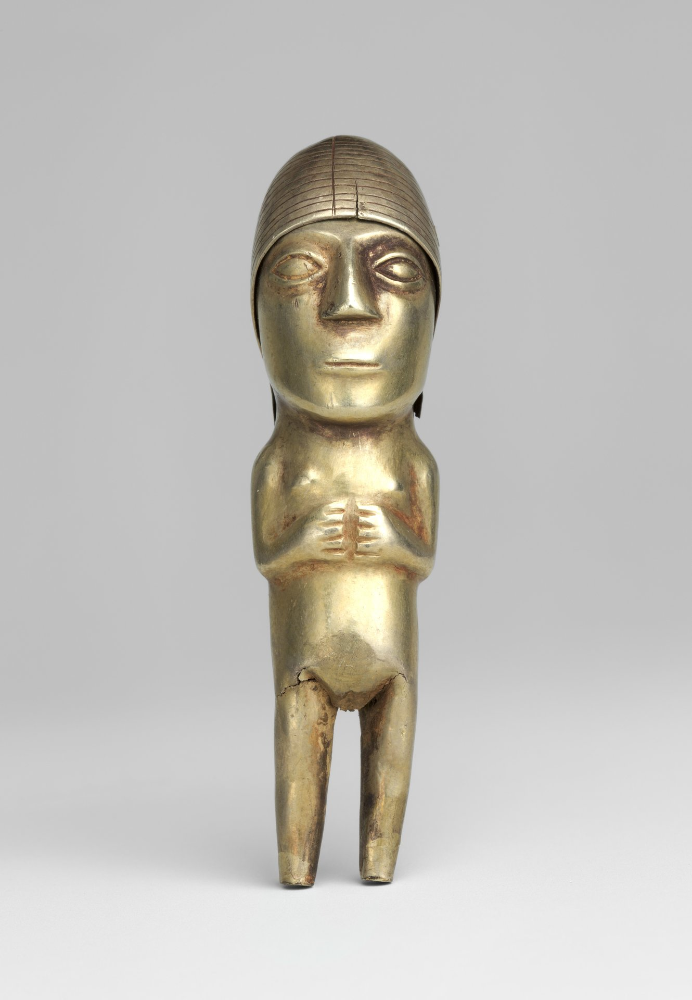
A metalurgia nos Andes é muito anterior a 1545. Sedimentos de lagos guardam o chumbo emitido pela fundição e por isso servem de arquivo dessa história. No Altiplano, a fundição começa por volta de 400 d.C., com Tiwanaku e Wari, e cai perto do ano 1000.
Em Potosí, ela aparece por volta do ano 1000 e se expande depois, com pico por volta de 1300. O chumbo tende então a cair e volta a subir em 1400-1450, sob os incas. A Laguna Lobato, a 5 quilômetros do Cerro, é o ponto de referência desses estudos, que registram a fundição, e não a mineração que não deixou chumbo.
A escala dessa exploração está em debate. Capoche, em 1585, disse que na descoberta não se achou sinal de lavra inca, talvez por respeito religioso. Platt e Quisbert consideram que o morro não foi explorado em grande escala antes dos espanhóis. Bouysse-Cassagne, com os dados dos lagos, sustenta que a exploração começou depois do colapso de Tiwanaku e seguiu até 1545. A divergência é também de método: os lagos medem fundição regional, e as crônicas registram a memória de um lugar sagrado.
Há outro indício de saber anterior à conquista. O dicionário de García de Llanos, de 1609, tem 258 termos de mineração, e mais de 160 são quéchuas, aimarás ou pukinas. Perto dali, Porco foi mina inca: fontes coloniais dizem que dali saiu prata para o Coricancha de Cusco, e o registro arqueológico indica exploração com trabalhadores de mit'a e especialistas yanakuna.
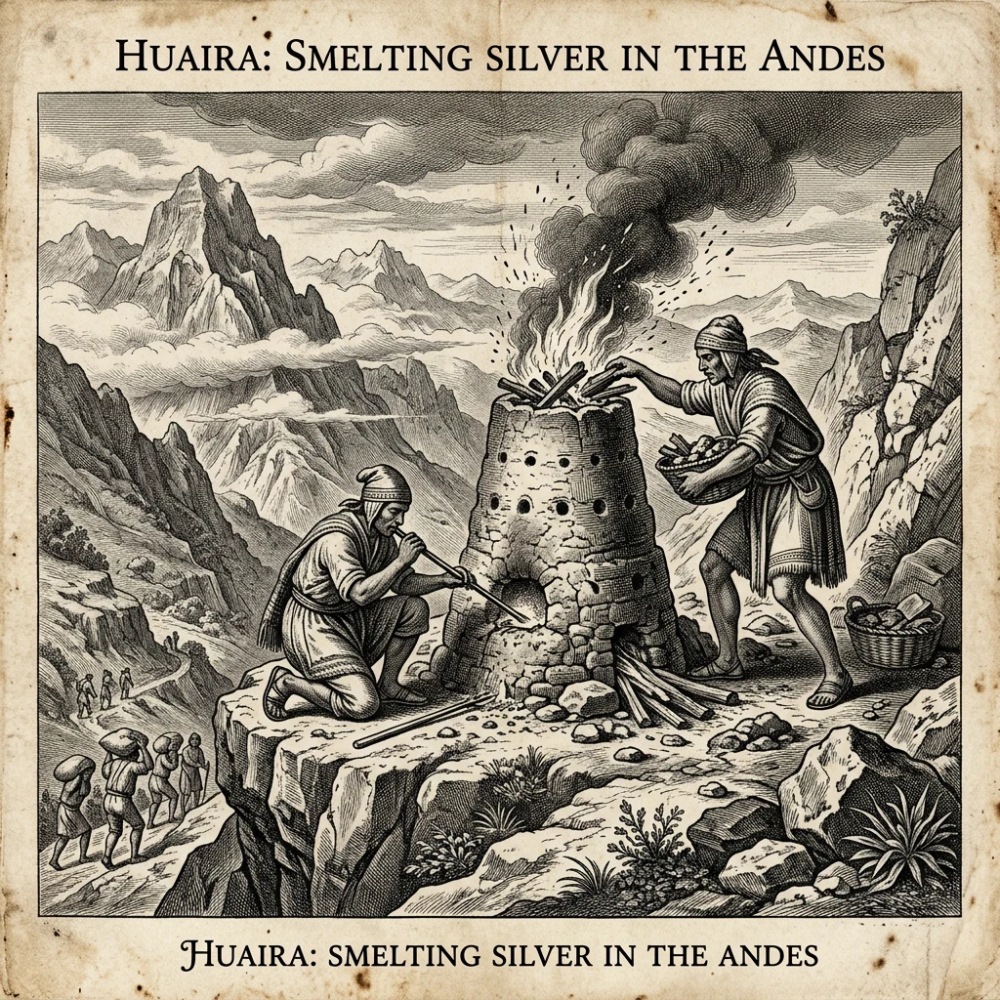
A huayrachina, ou guayra, do quéchua huayra, vento, é um forno de tiragem natural: um cilindro de barro ou pedra com cerca de um metro, aberto em cima e perfurado nos lados, que usa o vento em vez de foles. Ficava em cristas e funcionava sobretudo do fim da tarde à noite, quando o vento do altiplano é mais forte. O produto era uma liga de chumbo e prata, refinada depois em fornos menores, os tocochimbos, instalados dentro das casas indígenas.
A origem indígena consta dos escritos coloniais, embora ainda não tenha sido provada pela arqueologia. Com a amálgama, as huayras perderam o centro da produção, sem desaparecer: em Porco, a fundição seguiu em uso até cerca de 1675, e em 2001 um mineiro aposentado de lá, Carlos Cuiza, ainda fundia em huayrachina três ou quatro vezes por ano.
Quatro fontes coloniais confirmam que o Cerro era huaca, lugar sagrado. No cume havia uma plataforma cerimonial de cerca de 30 metros, com oferendas, e o santuário continuou ativo depois da conquista: em 1583 ainda havia índios que o serviam. Arzáns registra a lenda de Huayna Capac: um estrondo e uma voz mandam não tirar a prata, porque ela seria para outros donos. São relatos tardios, úteis para a memória do sagrado e fracos como registro de fato.
As versões de 1545
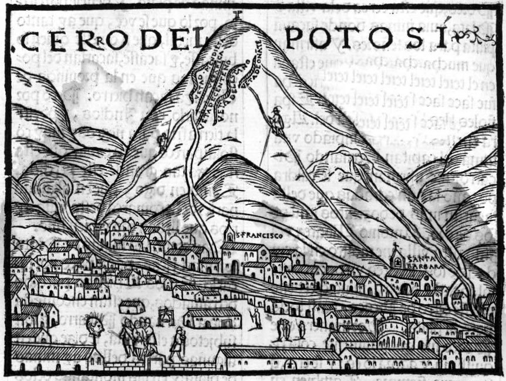
Não existe um relato único da descoberta, e as primeiras fontes são de cerca de trinta anos depois do fato. Capoche, o cronista mais antigo de Potosí, escreveu em 1585 que o primeiro a dar notícia foi um índio guanca, yanacona do espanhol Villarroel. Antes dele, quem descobriu teria sido Gualpa, índio chumbivilca, que perseguia veados morro acima e se agarrou a uma raiz que soltou o metal.
Outra linha de fontes liga o achado a quatro soldados espanhóis de Porco e a dois yanakunas, Guallpa e Chalco, mandados ao santuário do cume para buscar oferendas. Uma terceira leitura é política: Platt e Quisbert sustentam que a entrega do morro foi uma estratégia inca, ligada a Manco Inca.
A versão popular, em que um pastor chamado Diego Huallpa acende uma fogueira e vê a prata escorrer, circula muito, mas não aparece nas fontes consultadas. A data de 21 de abril de 1545 aparece, em Cieza de León, como o registro da veta Centeno, feito por Villarroel: a data marca o registro legal de um veio e nada informa sobre o dia da descoberta.
Nas primeiras décadas, a produção esteve em boa parte em mãos indígenas. Quase toda a prata de Potosí entre 1545 e 1572 foi fundida em huayrachinas operadas por yanaconas, servidores ligados a senhores, categoria que vinha do mundo inca e que passou a se prender a donos de mina espanhóis. Ainda assim, tinham margem própria. Capoche conta 6.497 assentos de guairas, que iluminavam o morro do fim da tarde pela noite.
Mulheres subiam ao Cerro com coca para trocar por minério rico, e o qhatu, mercado indígena de minério, recebia a produção. Esse arranjo acabou com o esgotamento dos minérios ricos da superfície, nos anos 1560, e com o acúmulo de refugos em volta das bocas de mina, ricos demais para jogar fora e pobres demais para a guaira. Em dezembro de 1572, o vice-rei Francisco de Toledo chegou a Potosí para pôr em marcha uma nova técnica e um novo regime de trabalho.
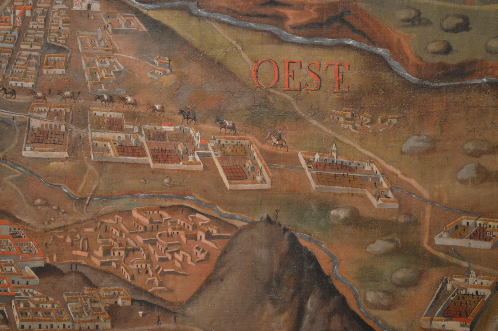
A máquina
A amálgama que destravou a escala, o sistema hidráulico da serra de Kari Kari e o trabalho forçado que sustentou tudo por mais de dois séculos.
Da amálgama aos cajones
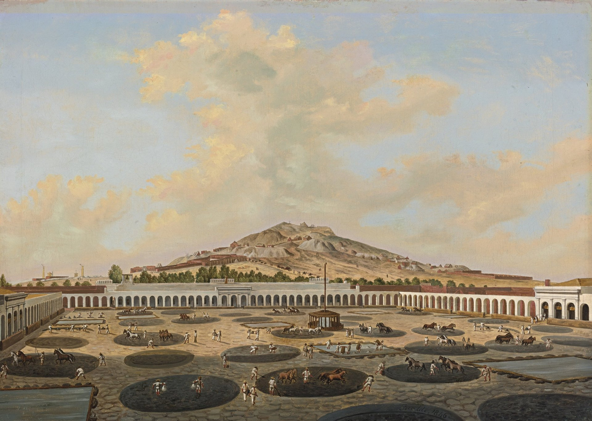
Bartolomé de Medina aplicou com êxito o método de amálgama em Pachuca, na Nova Espanha, em 1555. No Peru, o método do pátio foi testado sem virar indústria. Em 1572, Toledo mandou fazer experimentos secretos com um técnico vindo de Pachuca, Pedro Hernández de Velasco, e ficou em Potosí até maio de 1573 para pôr o plano em marcha.
O objetivo era recuperar a prata dos refugos e dos minérios pobres. A amálgama transformou Potosí: a produção cresceu quase 600% entre 1575 e 1590, segundo Bakewell, citado por Moore.
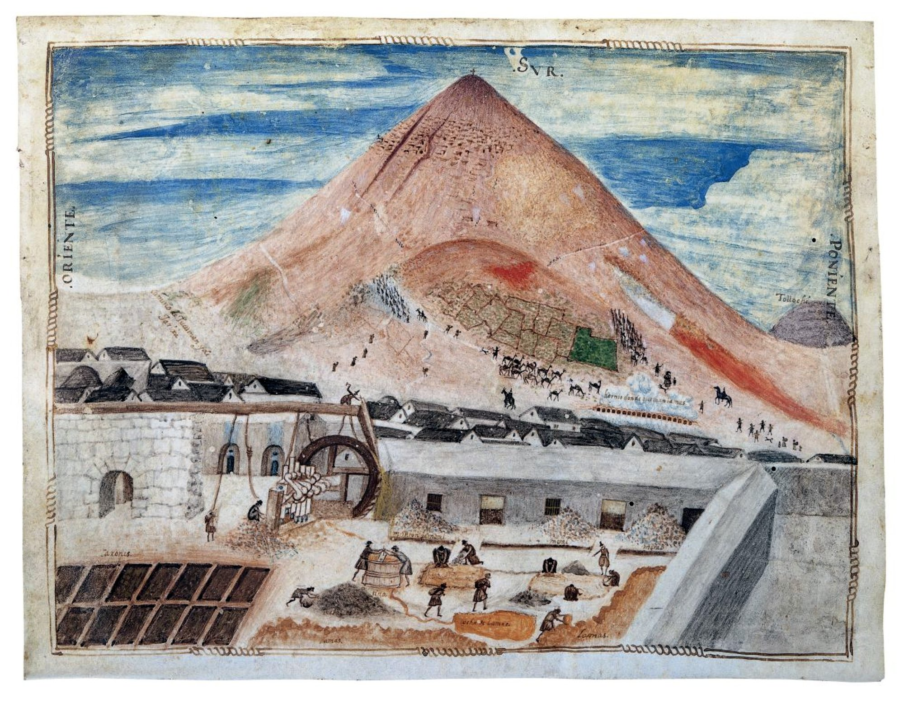
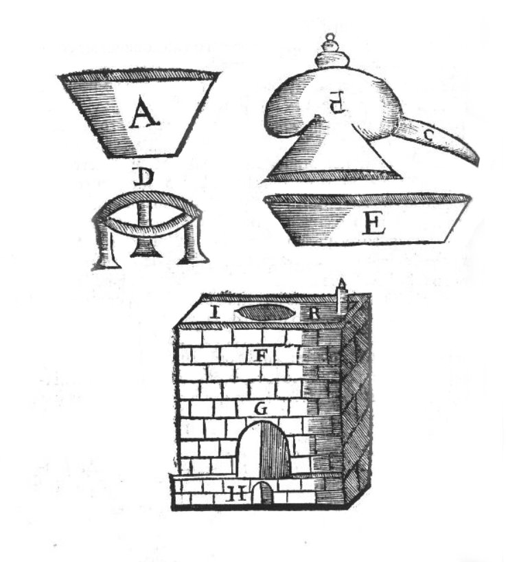
O método andino não era simplesmente o pátio mexicano. Ao que tudo indica, o processo de Potosí foi o dos cajones, tanques em forma de caixa aquecidos em fornos chamados buitrones. Um desenho de engenho de Arzáns mostra quatro buitrones, cada um com seis a nove cajones, e cada cajón levava cerca de 46 quilos de minério. Altitude, frio e tipo de minério explicam a adaptação. Robins e Hagan descrevem outra cena, com o minério moído espalhado num pátio de pedra. Os dois relatos têm em comum o pisoteio por trabalhadores em geral descalços e a exposição direta ao mercúrio.
O restante da cadeia está bem descrito: lavagem em tinas com água corrente, separação da pella, a amálgama espremida em tecido, moldagem em cone e aquecimento para expulsar o mercúrio, que saía como vapor. Em 1603 havia 4 mil trabalhadores para 132 engenhos. A amálgama exigiu engenhos caros, e os anos 1570 marcaram a concentração dos meios de produção em mãos espanholas.
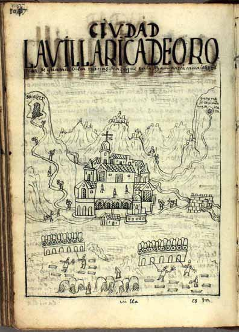
O mercúrio vinha de Huancavelica, descoberta em 1563 e lavrada desde 1564, ligada a Potosí no que foi chamado de "casamento de duas minas". A mina virou monopólio da Coroa e registrou, entre 1570 e 1810, mais de 50 mil toneladas de mercúrio. Em Potosí, consumiam-se de 1 a 2 partes de mercúrio por parte de prata.
Robins e Hagan, em artigo de 2012, estimam que cerca de 85% do mercúrio levado a Potosí foi para a atmosfera como vapor e o resto para os rios. Anezaki e Miyoshi citam uma recuperação bem maior, de cerca de metade com a destilação; as duas contas não medem exatamente a mesma coisa. Acosta falou de vapores que envenenam, e em 1629 o padre Pedro de Oñate disse que muitos se envenenavam ao fundir e pisotear.
No pico da produção, de 1580 a 1630, Potosí deu 81% da prata oficial do vice-reino do Peru e até 60% da produção mundial, segundo Barragán e Zagalsky, com uma ressalva: parte da prata de minas próximas era contada como de Potosí. O pico registrado foi em 1592. Esse volume dependia de mercúrio e de água, ambos escassos no alto da serra.
As represas de Kari Kari e a enchente de 1626
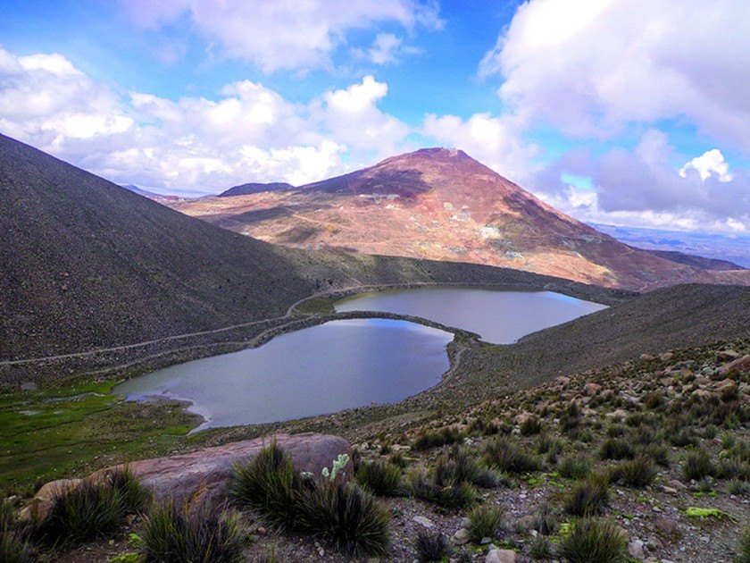
Moer minério em escala industrial exigia água corrente. Represas na serra de Kari Kari guardavam a água do degelo e sobretudo das chuvas de verão, e canais e túneis a levavam à cidade, formando a Ribera, onde ficavam os engenhos. Em 1627, um vice-rei escreveu que o reino, a Coroa e a cristandade dependiam das represas de Potosí.
O sistema foi construído aos poucos. As obras começam por volta dos anos 1570; em 1576 estariam prontas as de Caricari e San Pablo; havia seis em 1600; entre 1600 e 1610 vieram cerca de dez, por causa de uma seca. O total máximo chegou a 34, segundo Aguilar. Outras contas dão 32 ou 20, e um mapa de 1758 mostra dezoito: o número depende da data e do que se conta como represa.
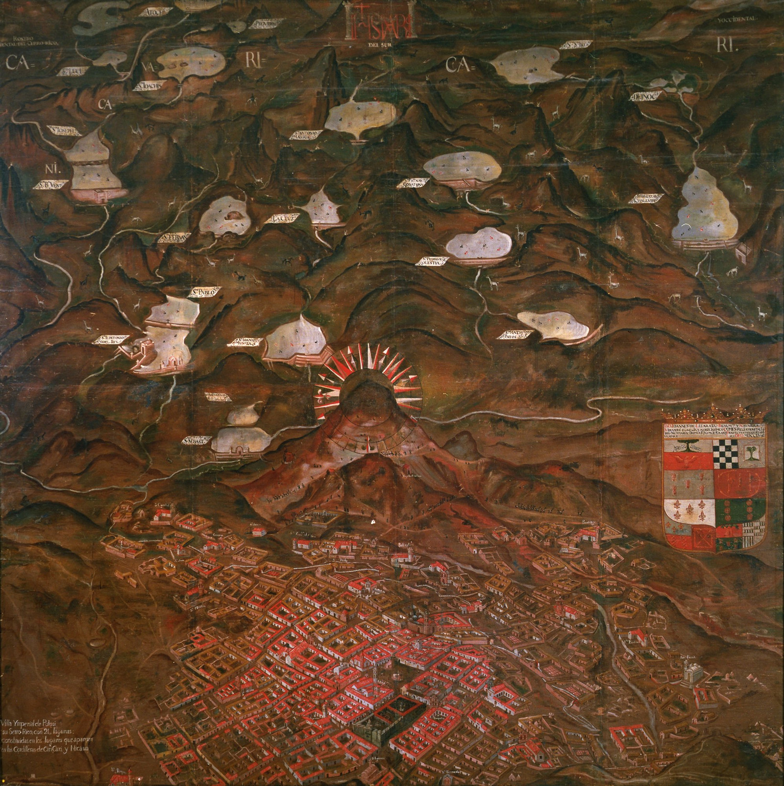
Os engenhos ficavam em cascata, de modo que a mesma água movia várias rodas. Em 1575 havia 74 moinhos hidráulicos em 48 instalações, e em 1585 Capoche listou 110 engenhos. A mão de obra das represas foi indígena, recrutada pela própria mita, e não há registro de engenheiros trazidos da Europa. Entre os mestres conhecidos estão o pedreiro basco Francisco Ortiz de Aulestia e o mestre pedreiro indígena Diego Sagayó, de Yocalla.
A represa de Caricari, ou San Ildefonso, rompeu em março de 1626, depois de um período de seca seguido de chuvas fortes. Lane dá o dia 15 de março, e Alvarado, o dia 6. As autoridades disseram que a represa secara e ficara porosa. Lane admite o peso do clima, mas aponta como causa central a recusa das elites em investir em materiais resistentes e vertedouros.
Arzáns lista as perdas caso a caso e faz da enchente o segundo de três castigos divinos. A reconstrução terminou em janeiro de 1628, e entre 1740 e 1770 houve nova onda de construção.
A mita e as outras formas de trabalho
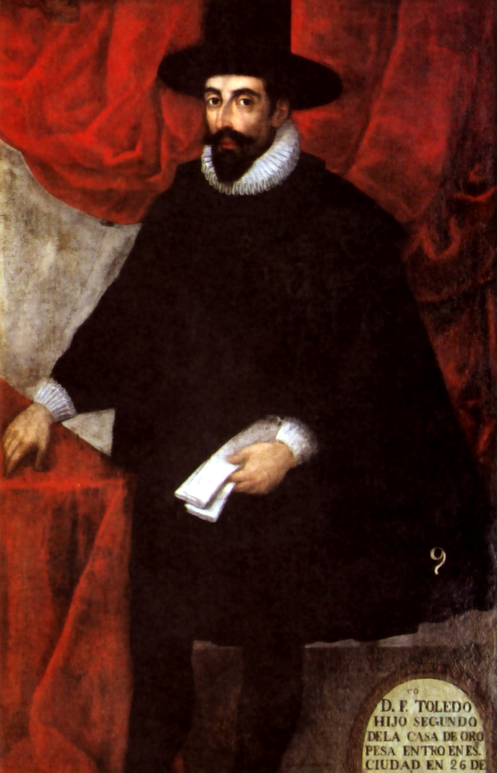
Francisco de Toledo governou o vice-reino do Peru de 1569 a 1581 e foi o personagem administrativo mais consequente da história de Potosí. Entre suas medidas estão as reducciones, aldeamentos forçados de indígenas, e a execução do último Inca de Vilcabamba, Túpac Amaru I, em 1572. A mais consequente para Potosí foi a mita.
A palavra remete a um sistema rotativo de serviço de época inca, e a mita toledana teria se inspirado em arranjos como o de Huayna Capac nos vales de milho de Cochabamba. Teve também precedentes coloniais: desde o fim dos anos 1540 encomenderos enviavam trabalhadores às minas, e em 1562 Polo Ondegardo montou um sistema rotativo semanal. Toledo organizou e ampliou um modelo, e mudou sua finalidade: o peso passou a se concentrar num único centro de exploração.
A mita foi a migração forçada temporária de homens de 18 a 50 anos, tirados de cerca de 91 mil tributários de dezesseis províncias, entre o sul de Cusco e o sul da atual Bolívia. Eram cerca de 14 mil homens por ano. As quotas iam de 13% a 17% dos tributários, e as rotas chegavam a mais de mil quilômetros e a até vinte dias de caminho.
A obrigação era de um ano em Potosí, com o contingente dividido em três grupos: cada terço trabalhava uma semana e "descansava" as duas seguintes. O descanso era teórico, porque o salário supunha que o mitayo se contratasse nessas semanas para sobreviver. Capoche, defensor do sistema, admitia que 3,5 reais por dia não sustentavam um índio, a mulher e os filhos. As famílias vinham junto, e as mulheres complementavam a renda.
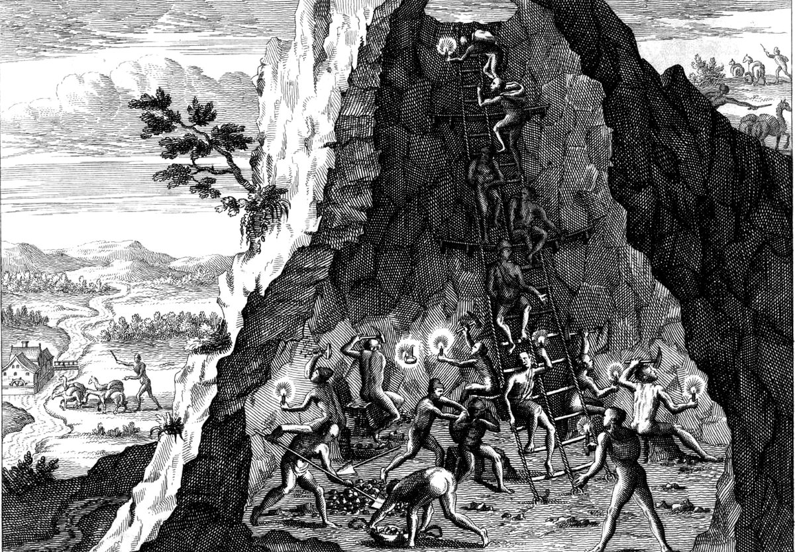
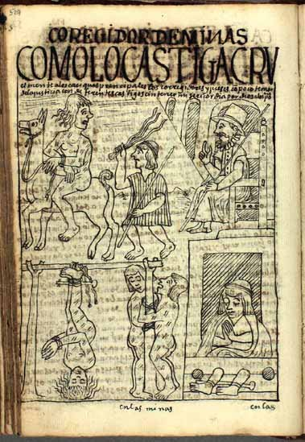
Acosta, em 1590, deu a descrição mais difundida do morro e falou de vapores que envenenam, matam e fazem cair os dentes. Outros detalhes correntes, como jornadas de doze horas, ainda dependem de conferência no original; deFrance confirma o uso de couro de lhama em escadas de mão.
Pedro Vicente Cañete escreveu, nos anos 1780, que o interior do morro parecia uma esponja, com desmoronamentos e mortes frequentes. Em 1589, um grande desmoronamento destruiu quatro minas, e o corregedor passou quarenta dias no resgate. Em 1610, as tarefas de apiri, que carregava o minério, e de barretero, que o arrancava, absorviam 68,9% dos mitayos em trabalho, sinal de como o peso se deslocou para o interior da mina.
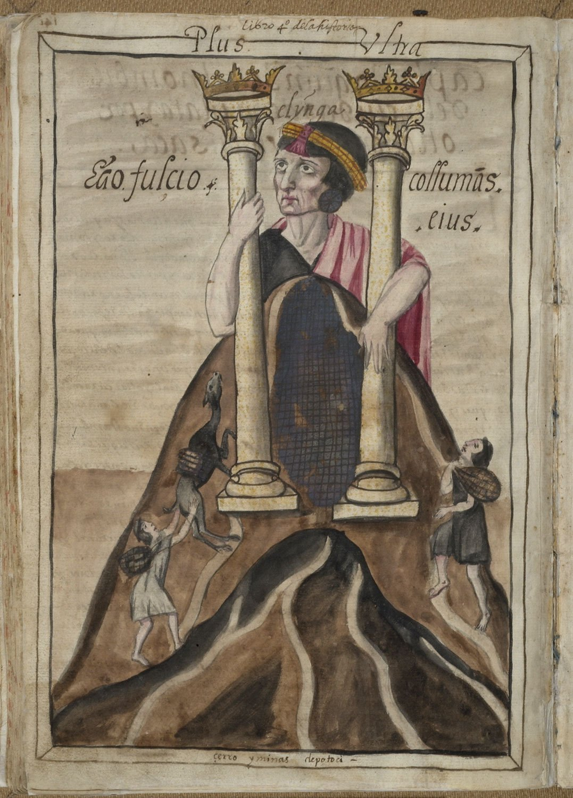
A mita nunca foi o único regime. Além dos mitayos havia os mingas, trabalhadores "livres" que ganhavam mais. No início do século XVII, os mitayos seriam 30% da força de trabalho mineira, e os mingas, 70%. Barragán propôs ver nisso um sistema único, porque a mesma pessoa podia ser mitayo numa semana e trabalhador livre nas outras.
Desde 1606-1608, parte da mita passou a ser paga em dinheiro. Em 1610, 25% da mita ordinária foi cumprida em "índios de prata". Os "índios de faltriquera" foram o passo seguinte: a prata recebida ficava no bolso do beneficiário, sem substituto contratado, e a mita virava renda.
A quota quase fixa combinou com uma população em queda. No repartimento de Visisa, os tributários caíram 39,7% entre 1575 e 1610, enquanto a quota de mitayos ficou igual. A migração foi forma de resistência: os destinos eram os corregimentos isentos, as terras baixas, Oruro depois de 1606 e centros mineiros menores. Quem deixava sua comunidade passava a ser classificado como forastero, e muitos "fugiam" sem sair de Potosí, virando carpinteiros, alfaiates ou mingas.
A mita teve críticos. Em 1660, donos de minas mandaram assassinar frei Francisco de la Cruz, nomeado com amplos poderes para reformar. Em 1670, o vice-rei conde de Lemos propôs abolir o sistema, por considerar os abusos irreformáveis, e morreu em 1671. Em 1795, o fiscal Victorián de Villava perguntou se era justo mandar gente a minas esgotadas. A maioria dos críticos relutava em pedir o fim do sistema, porque o Peru e o império dependiam da prata.
A abolição é datada em geral de 1812, pelas Cortes de Cádiz, mas as fontes divergem: Moore escreve 1819, e Smith, 1825. Melissa Dell mediu os efeitos de longo prazo: nos distritos sujeitos à mita, o consumo domiciliar é hoje cerca de 25% menor, e a atrofia infantil, cerca de 6 pontos percentuais maior.
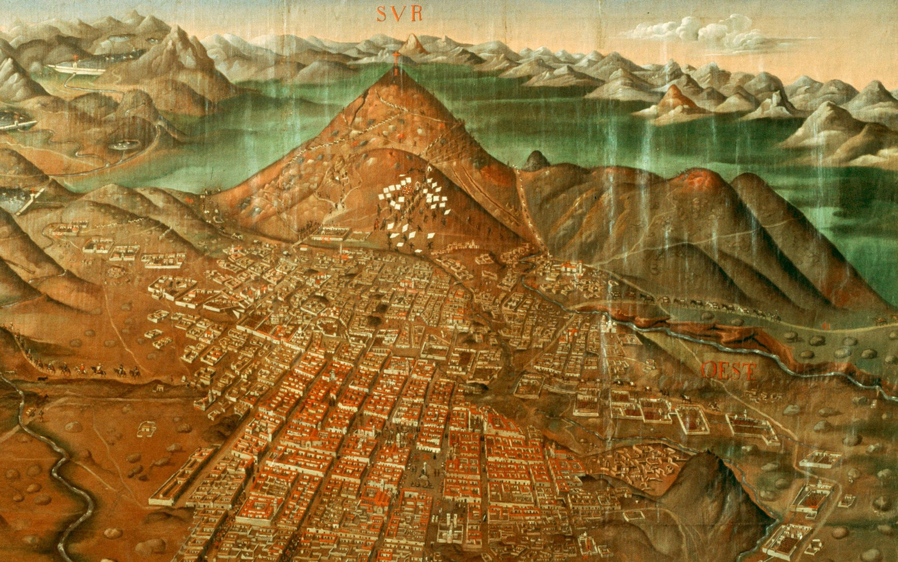
A cidade
Os africanos da Casa de Moneda, o auge da cidade a 4.000 metros e a fraude da moeda que abalou o império.
Africanos na Casa de Moneda
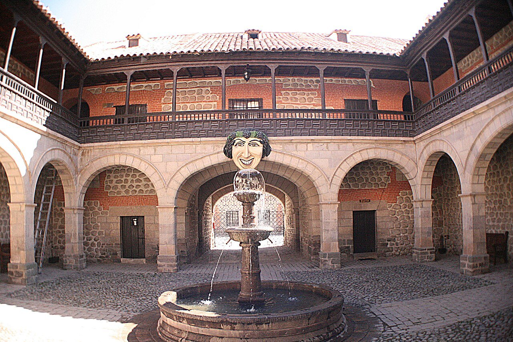
A presença africana em Potosí foi real, mas não onde a memória popular a põe. Barragán e Zagalsky escrevem que afrodescendentes foram pequena fração da força de trabalho na mineração de prata, e sempre na superfície. Africanos eram vistos como bons para trabalho manual pesado, mas pouco adaptados ao clima, e por isso não valiam a pena dentro das minas.
O lugar deles foi a Casa de Moneda. A dotação inicial previa doze escravizados africanos nas hornazas, oficinas privadas que cortavam e martelavam as moedas, e esses trabalhadores, sempre homens, passaram de 12 em 1575 a 150 em 1648. Os maiores grupos vinham da África centro-ocidental, chamados Angolas e Congos, com muitos crioulos nascidos na América.
A alforria era quase impossível, porque os preços dos escravizados eram muito altos, e a condição costumava durar até a morte. Havia, porém, negociação de "pequenas liberdades": moradia, visitas, descanso aos domingos, pagamento pelo trabalho noturno. Capatazes das hornazas eram sempre escravizados e às vezes tinham autoridade sobre brancos pobres condenados. Foram trabalhadores africanos escravizados que expuseram sob juramento a mecânica da fraude da moeda.
A maior cidade colonial das Américas
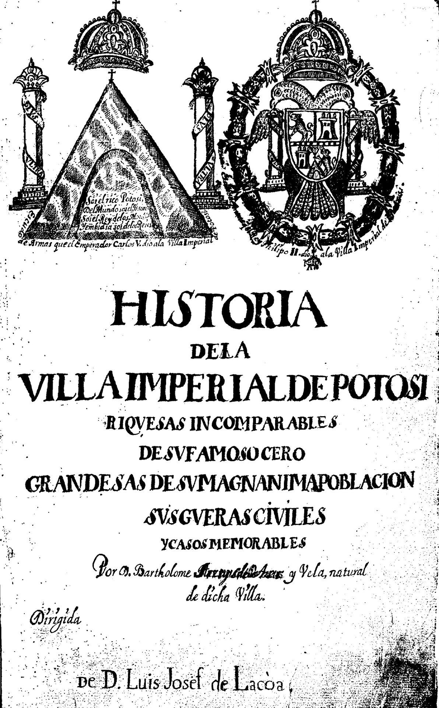
A estimativa mais segura da população vem de Zagalsky: 120 mil almas nos anos 1570 e cerca de 160 mil por volta de 1610, 80% indígenas. São estimativas, sem censo de época nas fontes consultadas. Barragán e Zagalsky falam em população comparável à de Londres ou Paris, e deFrance, na maior cidade colonial das Américas.
Espanhóis chamavam a cidade de Babilônia das Índias. Numhauser vê nisso o choque com uma urbe de feição indígena: o espanhol era pouco usado, nos lares falava-se aimará, quéchua ou puquina, e casais de ayllus e etnias diferentes foram a regra nos contratos. A água reforçava a separação: o bairro espanhol tinha fontes que as rancherías indígenas não tinham.
O abastecimento vinha de longe. Uma relação de 1603 fala em 100 mil lhamas consumidas por ano, e banha, toucinho e presuntos chegavam de Tarija e Paria, peixe salgado de Arica, grãos e forragem de Cochabamba e Chuquisaca. A arqueologia mostra a desigualdade à mesa: perto de Porco, numa casa de status médio, os camélidos passam de 90% dos ossos, enquanto em Tarapaya, onde ficavam casas de Francisco Gómez de la Rocha, dominam ovinos, caprinos e galinhas, com peixes de mar e de lago.
O comércio de varejo ficou sobretudo com mulheres indígenas. A coca vinha dos Andes de Cusco e era revendida com grande margem pelas "indias de la calle de la coca". A documentação notarial mostra três níveis: criadas de mercadores, contratadas, em geral por um ano, e independentes, algumas atacadistas. O salário era negociado conforme a habilidade da coquera, que podia ganhar mais que o marido.
Francisca Carna, de Huánuco, a mais rica dos testamentos estudados por Numhauser, mantinha 100 cestos de coca numa loja em 1588, e a compra de imóveis foi o principal investimento dessas mulheres. Jane Mangan dedicou ao tema o livro Trading Roles. A imagem delas foi disputada: Cieza as descreveu com admiração em 1549, e nos anos 1580 quem queria mudar o regime de produção as atacou.
Entre 1622 e 1625, a cidade viveu uma guerra entre facções. Os vascongados dominavam cargos, segundo Arzáns, e tinham 70% dos engenhos da Ribera em 1602. Os vicuñas eram um grupo variado de crioulos, andaluzes, extremenhos e outros. Arzáns fez dessa guerra a primeira das três "destruições" da cidade, e seu relato mistura documento e invenção, com presságios e personagens criados.
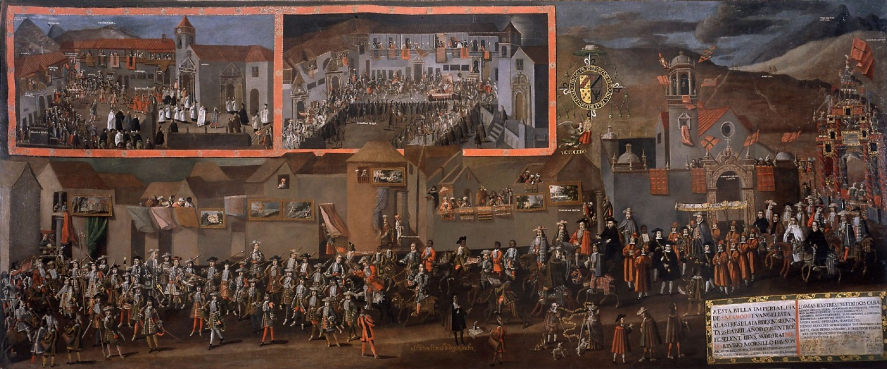
A Casa de Moneda e a fraude dos anos 1640
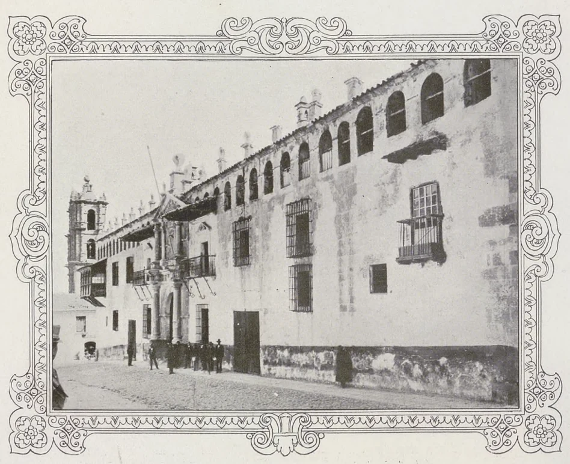
Toledo ordenou a casa da moeda em 1573, e ela foi estabelecida em 1574. Foi por anos a mais produtiva do mundo, e a cunhagem era negócio privado: cargos eram comprados por mercadores ricos. As moedas eram fundidas por trabalhadores indígenas, cortadas à mão por africanos escravizados e cunhadas por homens livres classificados como espanhóis. Ali se faziam as macuquinas, moedas irregulares feitas a martelo.
A principal era o real de a ocho, também chamado de peso ou, em inglês, piece of eight: pouco mais de 27 gramas, com cerca de 93% de prata. Para Irigoin e Millmore, foi a primeira moeda global, presente em reservas na Holanda, na Grã-Bretanha e nos Estados Unidos e em impostos na China. A palavra dólar veio do thaler e passou a essa moeda. A origem do símbolo $ é incerta: a hipótese mais aceita é a da abreviatura manuscrita "ps", de pesos, e o monograma de Potosí é em geral descartado.
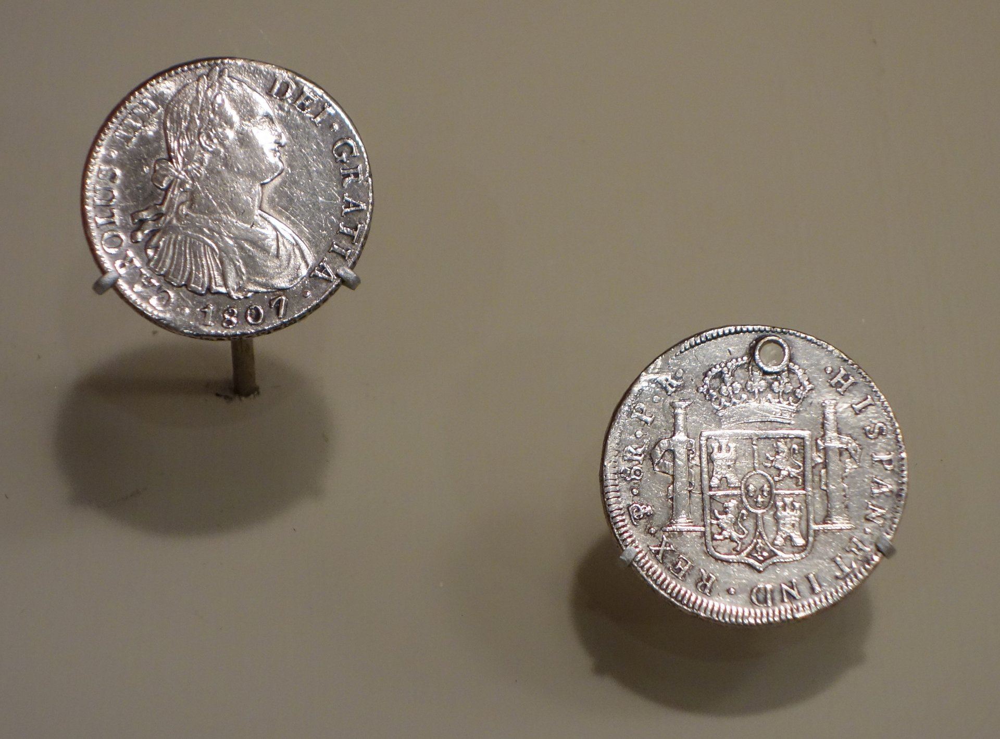
O esquema de aviltamento começou no fim dos anos 1630 e durou cerca de uma década. A fraude consistia em retirar peso e pureza de moedas verdadeiras. As causas apontadas são a queda da produção, a falta de mão de obra, a seca, o endividamento de mineiros e refinadores e a terceirização de cargos sensíveis.
Os protagonistas foram os mercaderes de plata, financistas de Potosí, com funcionários comprados. Sato aponta como verdadeiro autor o mercador Francisco Gómez de la Rocha e considera o ensaiador interino Felipe Ramírez de Arellano um bode expiatório; Sanz Ayán vê como autor Juan de Figueroa, ensaiador-mor que vivia em Lima. Nos anos 1640, a casa produziu quase 5 milhões de reais de a ocho por ano, recorde nunca igualado.
Gênova foi a primeira a reagir, desde 1641. Francisco de Nestares Marín, ex-inquisidor de Valladolid, recebeu instruções em setembro de 1647 e chegou a La Plata em 2 de novembro de 1648. Na noite de 31 de janeiro de 1650, depois de torturado, Rocha foi morto por garrote dentro da Casa de Moneda. Em 26 de fevereiro, Ramírez de Arellano foi enforcado numa praça, e Nestares mandou que a cabeça não fosse cortada, como previa a sentença. Foram os dois únicos fraudadores executados, embora um relatório de 1649 liste 119 culpados.
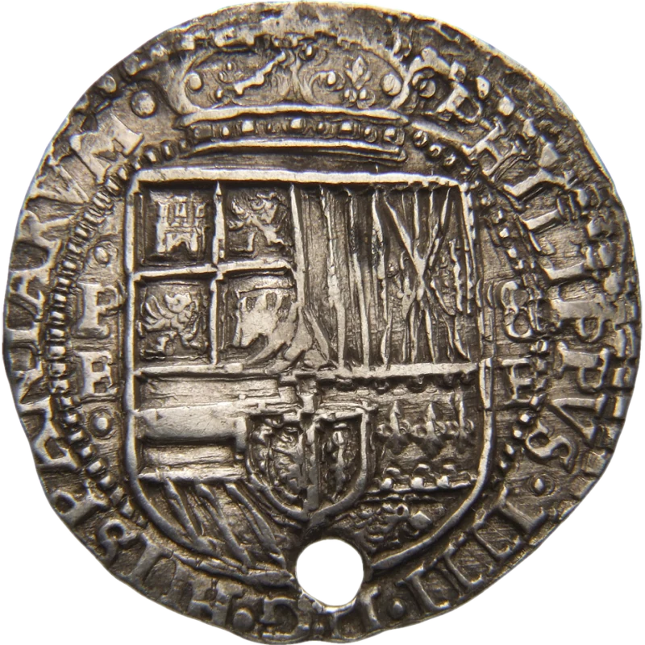
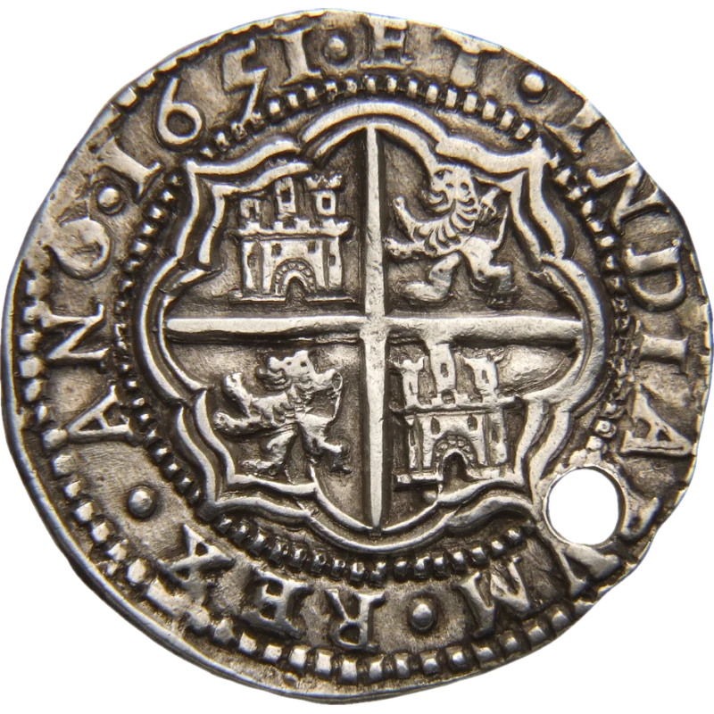
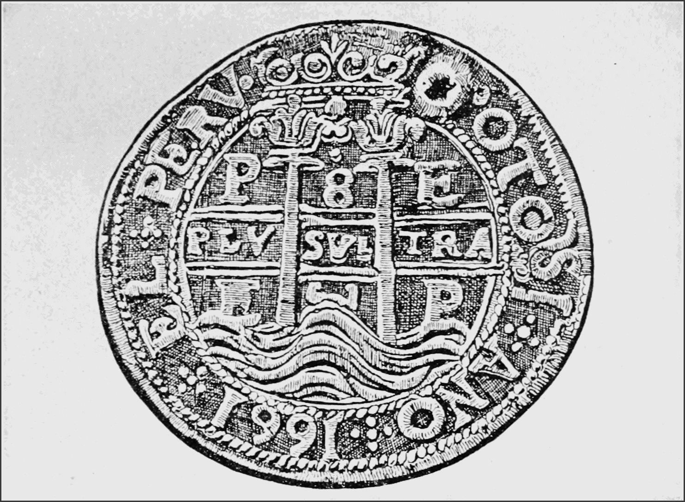
Filipe IV ordenou o recolhimento em 1º de outubro de 1650: moedas ruins de Potosí chegavam a três quartos de prata, e o peso passou a valer 5 reais, com desconto de 37,5%. A medida provocou pânico em Sevilha, Córdoba e Granada. Em 1652, as moedas voltaram ao peso e à pureza, com novo desenho.
A onda de choque foi global. Portugal proibiu as patacas com marca P em 1647, a França em 1650 e a Prússia oriental em 1651. Em Massachusetts, a moeda ruim ajudou a motivar a casa da moeda de John Hull, em Boston, em 1652. Em Surat, o peso era derretido na entrada, e em Java, nos anos 1660, o rei de Bantam ainda recusava as moedas de Potosí. O maior dano caiu sobre gente comum, presa a dinheiro que não conseguia repassar.
O mundo
A pintura que fundiu a Virgem e o Cerro, a prata que chegou à China e o longo fim do ciclo colonial.
Arte, religião e sincretismo
A produção artística de Potosí é tema pouco explorado na própria historiografia da cidade, segundo Barragán e Zagalsky, e as fontes consultadas não tratam da chamada escola de pintura local. Seu nome mais conhecido é Melchor Pérez de Holguín, que em 1716 assinou a grande tela da entrada do vice-rei Morcillo e se retratou nela, acima da própria assinatura. A vida do pintor e as datas da escola ficam por verificar.
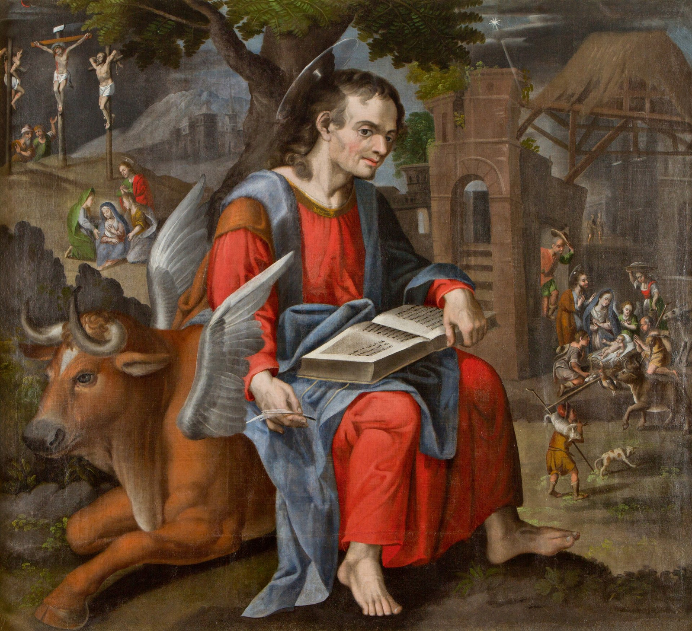
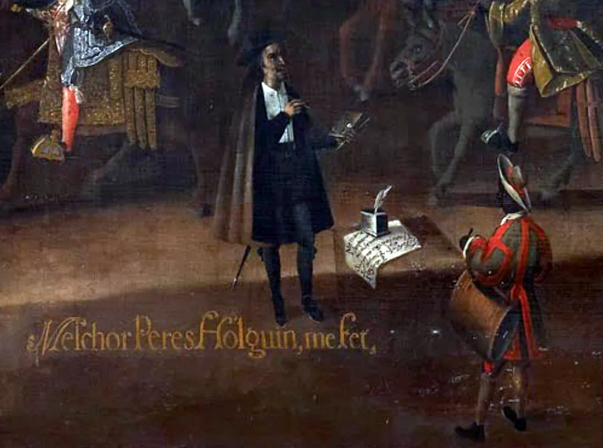
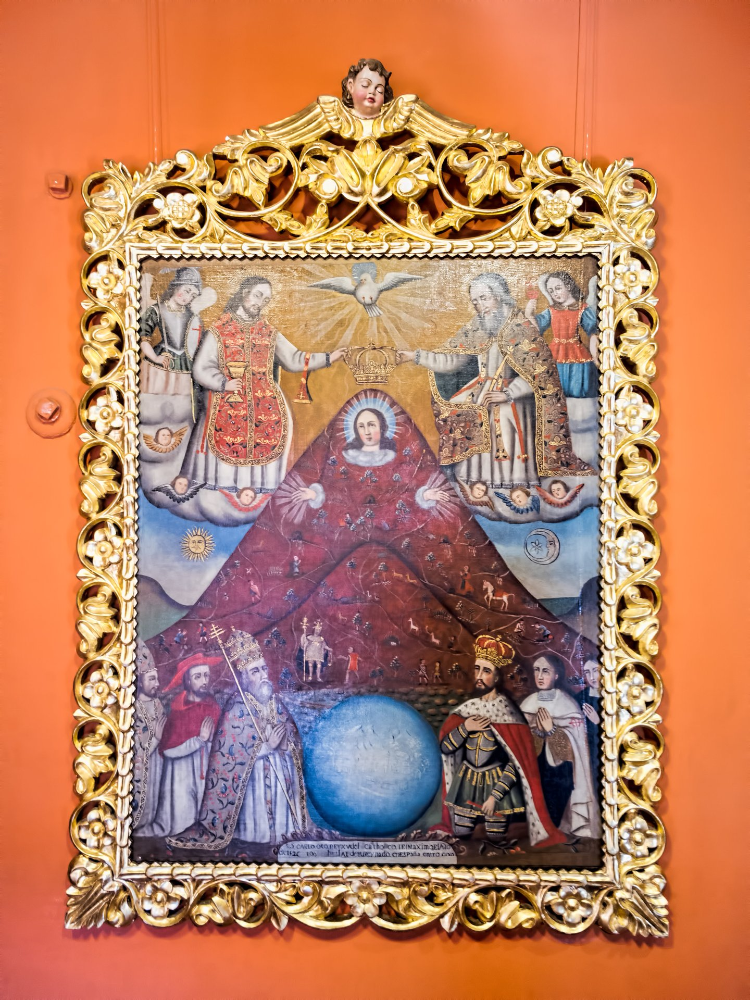
O quadro do museu da Casa de Moneda, de autor anônimo, mostra a montanha com rosto feminino e mãos abertas, coroada pela Trindade. Embaixo ficam o papa Paulo III, um cardeal e um bispo; do outro lado, Carlos V e um indígena com a cruz de Alcântara, provavelmente um cacique doador. Na encosta está o inca Maita Cápac. Existem cinco composições do tema, e uma delas, de 1720, está no Museu Nacional de Arte, em La Paz.
A leitura de Teresa Gisbert vê aí um duplo processo: a identificação de Maria com a Pachamama e a superposição da Virgem aos morros adorados. Em 1621, Ramos Gavilán formulou a teoria que identifica Maria com um monte.
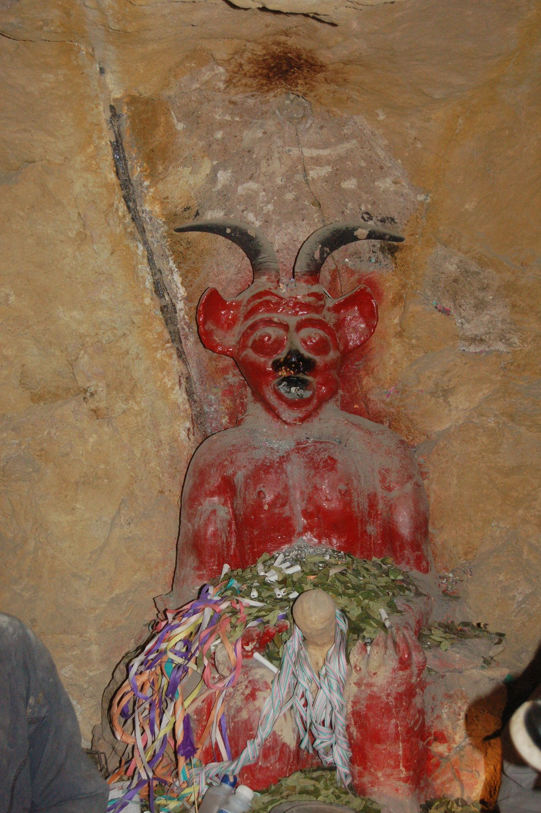
É a figura que ocupa santuários dentro das galerias do Cerro Rico. A origem é debatida. Bouysse-Cassagne escreve que supay designa a alma do ancestral, e mineiros veneravam ancestrais em forma de pedra. June Nash observou em 1979 que sob o Tío de Oruro se cultuava o velho deus Wari. Gisbert liga o Tío a Pachacámac e registra que, segundo Cobo, os índios, sem a letra D, diziam "Tios" por "Dios". Todas seguem como hipóteses.
Todo o processo mineiro era ritualizado, e os mineiros diziam que o deus do morro lhes dava a prata. Nash leu o culto como reforço da solidariedade do grupo. Francescone, porém, encontrou em 2016 mineiros que pareciam ter quase abandonado essas práticas, apesar de sua centralidade na iconografia. As imagens de turismo podem estar à frente da prática.
A prata que mudou o planeta
A prata de Potosí mudou o funcionamento do sistema monetário global. Saía sobretudo como moeda recém-cunhada e como retorno de comércio privado, com a exação real em segundo plano. Por terra ia a Arica, no Pacífico, e a rota não oficial, pelo Rio da Prata, foi grande: entre 1648 e 1702 chegaram a Buenos Aires 34 navios registrados contra 200 ilegais.
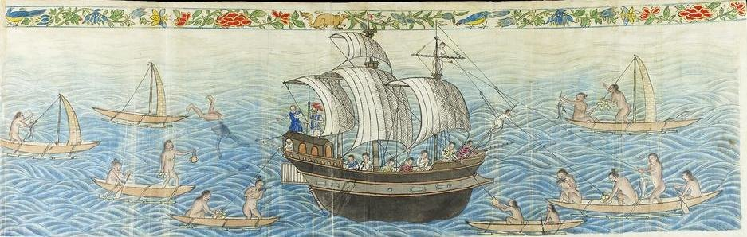
A China importava prata porque transformou o metal em base da sua economia. O galeão de Manila ligou Manila e Acapulco de 1565 a 1815, com uma ou duas viagens por ano. O lucro alimentava o fluxo: uma onça de ouro comprava onze de prata em Amsterdã, e a mesma prata se trocava na China por duas onças de ouro, ou por mercadoria equivalente.
Bonialian mostra duas vias. Uma cruzava o Atlântico e seguia pelo Báltico, pelo Levante e pelo Cabo: do fim do século XVI ao fim do XVIII, de 30% a 50% da prata hispano-americana importada pela Europa foi reexportada à China. A outra cruzava o Pacífico. Os volumes são disputados: Flynn e Giráldez propõem 5,5 milhões de pesos por ano entre 1581 e 1700, e Chuan, de 2 a 4 milhões.
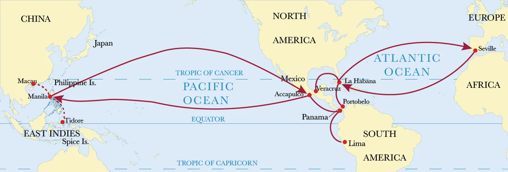
Em 1581, o primeiro-ministro Zhang Juzheng promulgou a Lei do Chicote Único, reforma fiscal que unificou a cobrança. Antes, os impostos se pagavam com produtos agrícolas, seda ou trabalho. Dali em diante, Ming e Qing agiram como uma "suction pump" de prata, na imagem de Sun. Dennis Flynn e Arturo Giráldez relacionam essa dinâmica à arbitragem entre ouro e prata.
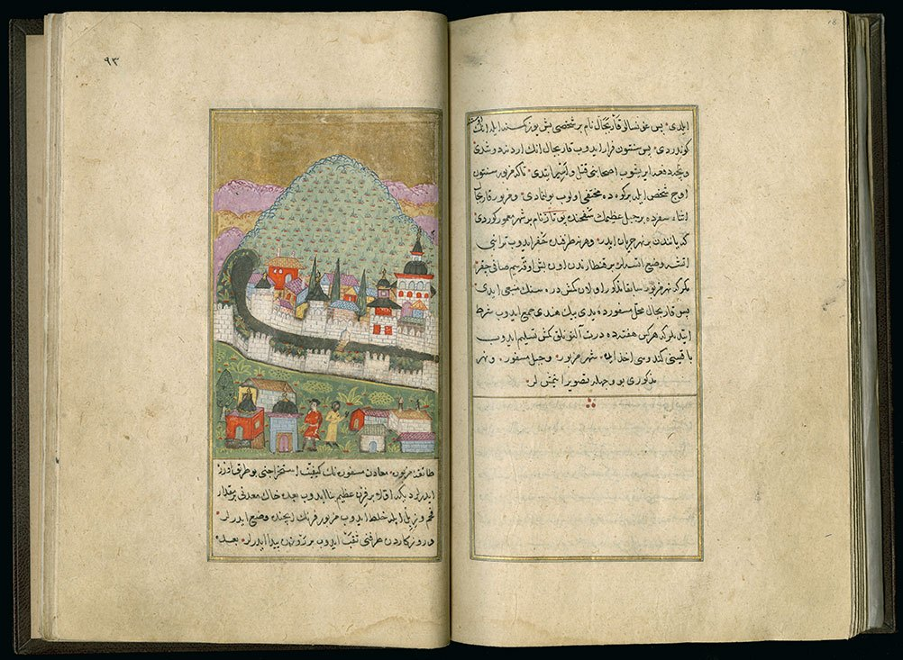
A revolução dos preços é tema clássico, desde o estudo de Earl Hamilton de 1934, mas pouco coberto nas fontes de acesso aberto. Para a Coroa, a prata foi até 40% da receita em alguns anos e quase nada em outros, o que obrigava a tomar empréstimos em grande escala. Os genoveses forneceram 67% dos empréstimos antes da bancarrota de 1575. Drelichman e Voth mostram que o sistema funcionava: os banqueiros impunham moratórias de crédito, e a bancarrota fazia parte do arranjo.
Dos 83 milhões de ducados dos asientos, 36,5% eram entregues em Flandres e 19,9% na Itália, o que mostra onde a prata ia parar. A notícia do pico de Potosí chegou ao Império Otomano, à Índia portuguesa e à China Ming.
Moore liga a prata de Potosí à ascensão da República Holandesa e ao "segundo" século XVI de Braudel.
Declínio, recuperação e estanho
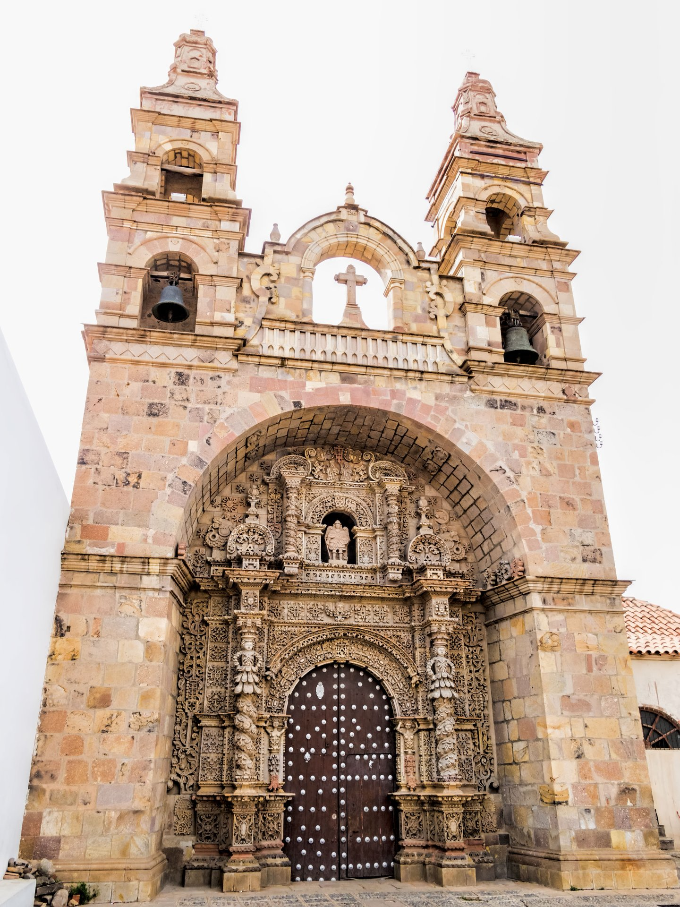
A produção caiu de modo acentuado por volta de 1640 e por décadas depois de 1650, embora os anos 1640 tenham tido cunhagem recorde. Lane data a retomada dos anos 1720, e Barragán e Zagalsky, de 1730. A cidade encolheu junto: em 1714 tinha 70 mil habitantes e 40 engenhos, contra 120 antes, segundo Frézier, citado por Moore.
Morineau contesta a ideia de uma crise clara: parte da prata saía sem registro, e o colapso da produção registrada pode não equivaler ao da produção real.
Os pequenos também participaram da recuperação. Desde os anos 1730 ganham visibilidade os k'ajchas, que ficavam nas minas nos fins de semana para extrair por conta própria, e os trapiches, moinhos de pedra rudimentares. Na inspeção de 1761-62, 73% dos trapiches eram de indígenas.
Os azogueros, vistos como principais produtores, responderam por só cerca de 50% da produção entre 1754 e 1800. O restante veio de k'ajchas, trapiches e minérios de fora. A Companhia de Azogueros virou Banco de Rescates em 1752 e, depois, Banco Real de San Carlos, em 1795, com o monopólio de compra do minério de Potosí.
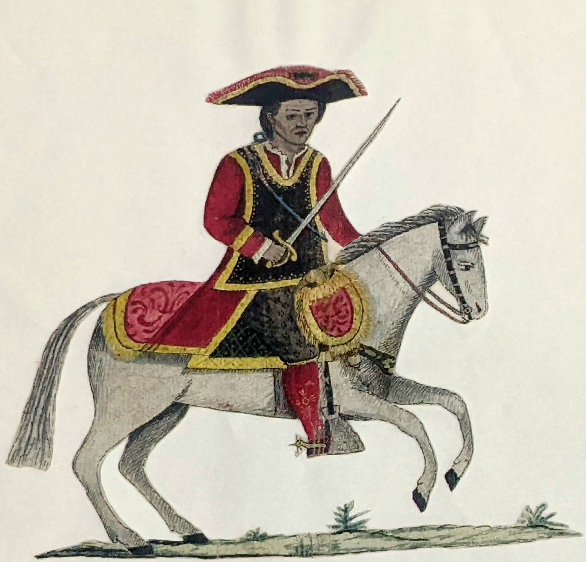
Em 1780-1781, rebeliões indígenas sacudiram o altiplano andino, com Túpac Amaru II, no Peru, Tomás Katari, em Chayanta, e Túpac Katari, que sitiou La Paz. As fontes consultadas tratam desses episódios só de passagem.
Em dezembro de 1810, forças vindas de Buenos Aires ocuparam Potosí e executaram o intendente espanhol Francisco de Paula Sanz. Patriotas e realistas alternaram-se na cidade até 1816. Em 1825, o grêmio de refinadores, o Banco de San Carlos e a Casa de Moneda viraram instituições centrais da Bolívia republicana, e Bolívar e Sucre subiram ao topo do Cerro, gesto que fez dele relíquia nacional.
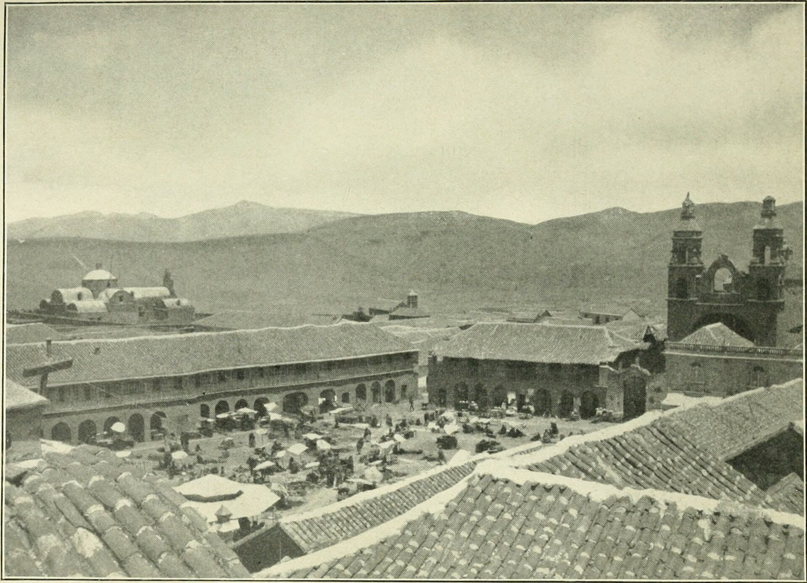
Anezaki e Miyoshi dividem a história do Cerro em três fases: prata de 1544 a 1884, estanho de 1885 a 1985 e sulfetos de prata, zinco e cobre desde 1986. Em 1899, a Bolívia já produzia 9 mil toneladas longas finas de estanho.
A geração de Simón Patiño, Hochschild e Aramayo dominou o setor: em 1948, 78% da produção vinha desses três grupos. Patiño teria nascido em 1860, em Cochabamba, e ficou ligado ao veio de Llallagua, de 1900. Llallagua e Catavi não ficam no Cerro Rico.
Em Catavi, em 1942, houve um confronto violento entre tropas e mineiros numa greve, que enfraqueceu o governo de Peñaranda e estimulou a sindicalização. Em 1952, o Decreto Supremo 3223 nacionalizou as minas dos três grupos, que passaram à COMIBOL. Em 1985, com o colapso do mercado de estanho, o governo adotou reformas neoliberais, e as demissões em massa atingiram a estatal.
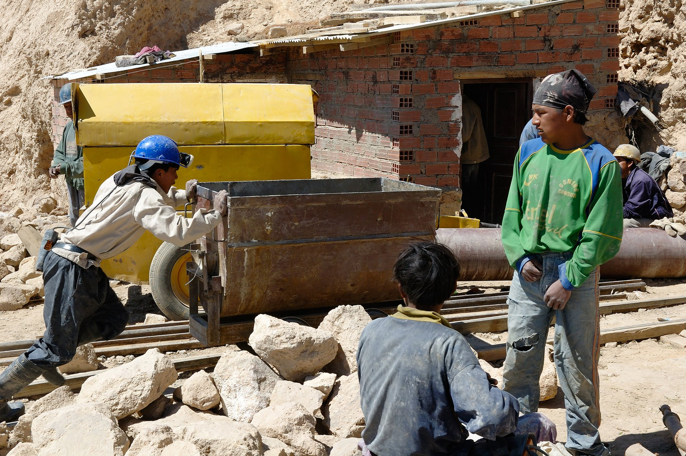
Hoje
As cooperativas, o trabalho nas bocas de mina, o cume em risco e os debates historiográficos em aberto.
Cooperativas, mulheres e riscos
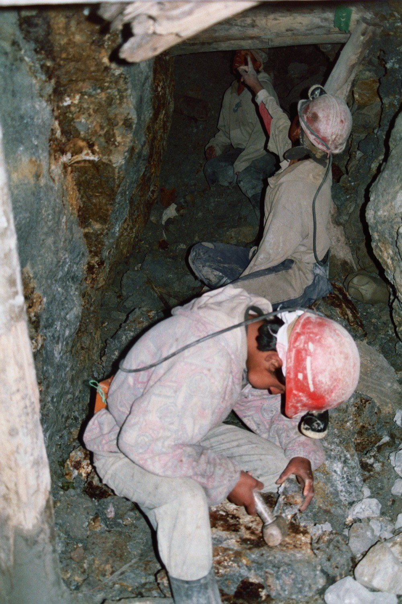
Depois de 1985, mineiros tomaram depósitos e os trabalharam até o governo reconhecer seus direitos. No Cerro, 54 cooperativas exploram hoje zinco, chumbo, estanho e prata, e a hierarquia é rígida: ser peão ou sócio define o trabalho. Ao lado delas está a Manquiri, subsidiária da canadense Andean Precious Metals, com contrato com a COMIBOL.
O número de mineiros está em disputa. A COMIBOL informou 12 mil em 2023, 20 mil em 2024 e 30 mil em setembro de 2025, enquanto o jornalista Mario Caro diz que o real é perto de 10 mil e que a estatal infla o dado por poder político. Francescone dá de 6 mil a 20 mil por dia.
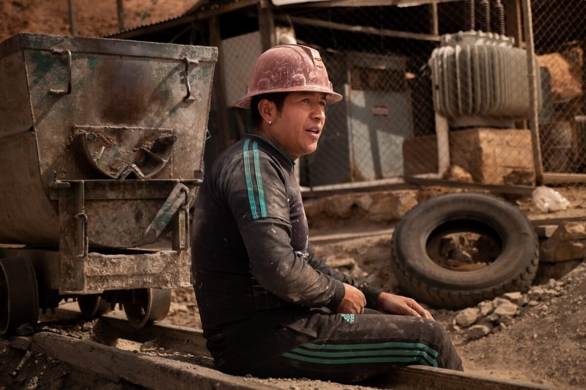
O documentário The Devil's Miner, de 2005, dirigido por Kief Davidson e Richard Ladkani, mostrou o trabalho infantil no Cerro por meio de Basilio Vargas, que começou aos 11 anos. Em 2025, aos 35, ele seguia na montanha.
Silicose, pneumonia e câncer aparecem entre as doenças das famílias mineiras. Mal de mina é o termo local, e mascar coca é entendido pelos mineiros também como proteção contra o pó. A expectativa de vida de 40 a 50 anos, muito repetida, não foi confirmada nas fontes consultadas.
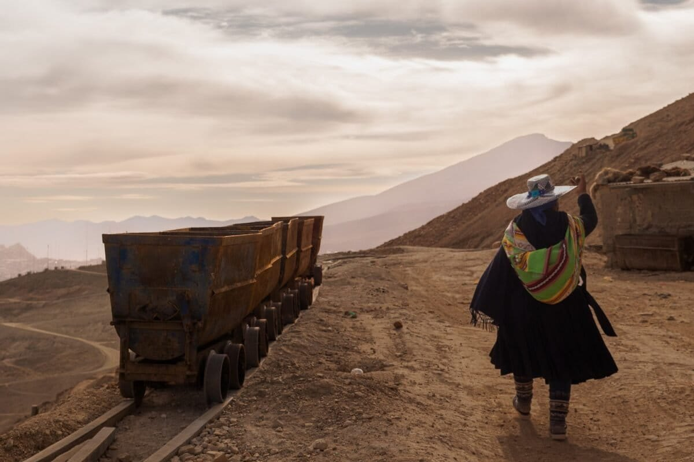
As mulheres aparecem sobretudo como palliris, que separam minério, e guardas. Palliris, em geral filiadas a uma cooperativa, têm alguma proteção. Guardas ficam permanentemente nas bocaminas, vigiando máquinas e armários, muitas com filhos e netos junto, e ganham de 500 a 1.000 bolivianos por mês, de 18% a 36% do salário mínimo. Paulina Garabito, da MUSOL, denuncia violência sexual e exploração.
A montanha que afunda
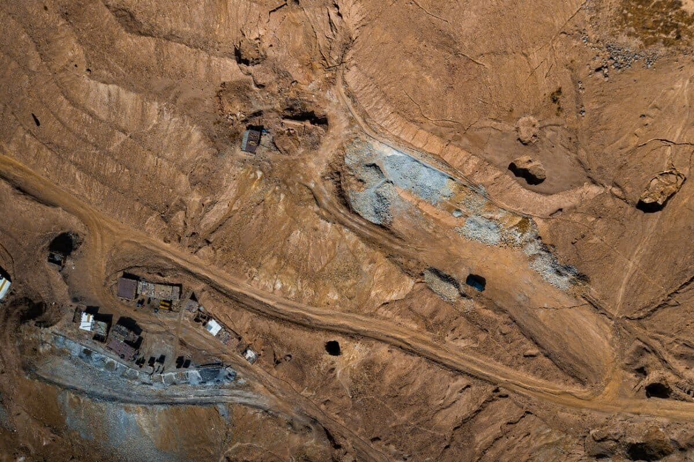
Um grande afundamento perto do cume ocorreu em 2010, segundo Swift, ou em 2011, segundo outras fontes. O engenheiro Freddy Llanos prevê mais 10 a 20 metros de colapso, deixando um cone truncado, e seu projeto de reforçar o cume com concreto e aço precisa de 3,5 milhões de dólares ainda não garantidos.
Há uma longa teia legal. Um decreto de 2004 proíbe mineração de superfície acima de 4.700 metros e limita os trabalhos entre 4.400 e 4.700 metros. Uma sentença constitucional de agosto de 2022 mandou tomar medidas efetivas, com a saída das cooperativas das áreas proibidas, mas em outubro de 2025 a mudança não estava concluída.
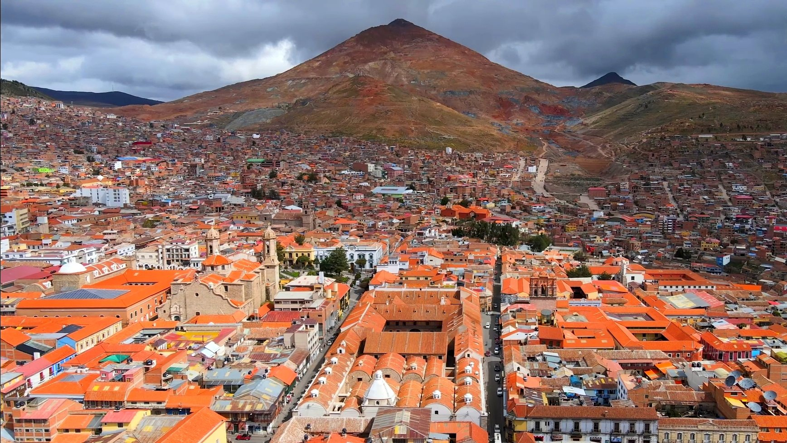
As decisões da UNESCO mantiveram o sítio em perigo porque o Estado não aprovou instrumento legal de gestão do Cerro. A "Rota Crítica", plano de recuperação datado de 2023 em trechos de busca, ainda precisa de conferência no documento original.
O que a historiografia atual discute
Alguns números e interpretações sobre Potosí têm debate aberto.
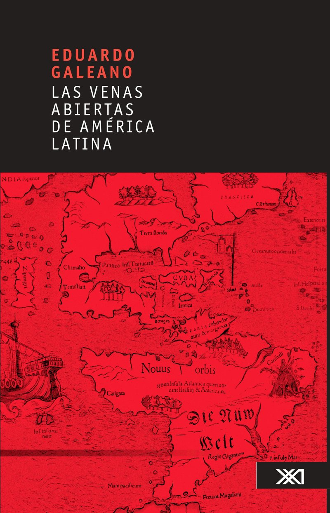
Eduardo Galeano afirmou em As veias abertas da América Latina, de 1971, que o Cerro Rico teria consumido 8 milhões de vidas indígenas em três séculos. Barragán e Zagalsky escrevem que isso foi dito "sem evidência histórica". Uma conta de ordem de grandeza ajuda: com 13 a 14 mil homens por ano, por cerca de 240 anos, a mita somaria no máximo perto de 3,3 milhões de turnos anuais, e muitos homens serviram mais de uma vez. A conta mede passagens, sem dizer quantos morreram, e deixa de fora mingas, famílias e Huancavelica. Ela não diminui a violência do sistema; só mostra que os 8 milhões não vêm de contagem.
Em 2014, Galeano disse que o livro "tentou ser" de economia política sem que ele tivesse a formação necessária, e que não o leria de novo. Nos trechos encontrados, ele não trata da cifra. Já os "5 mil mitayos" de que se fala às vezes correspondem ao turno semanal, de cerca de 4.400 a 4.500 homens; o contingente anual era de cerca de 13.500.
Moore trata Potosí como fronteira de mercadoria no nascimento da economia-mundo capitalista. Flynn e Giráldez datam a globalização do fim do século XVI, com a China como polo, e Bonialian dá à ligação entre China e América o papel de elo final. A expressão "primeira cidade global" é associada a Kris Lane, mas não pôde ser conferida no livro dele.
A leitura clássica via os indígenas como mão de obra substituída pela técnica espanhola. Autores recentes, como Van Buren e Cohen e Barragán, os veem como inventores e usuários de tecnologia, fundindo saberes andinos e europeus. As huayras seguiram em uso, mulheres indígenas dominaram o varejo, e Gisbert lê a Virgem do Cerro como superposição aos morros adorados.
Linha do tempo
Os marcos do tema, da formação do Cerro Rico às disputas de hoje, com uma explicação curta de cada um. Alguns dados não aparecem no texto da apostila.
-
Há 13,77 milhões de anos
Domo do Cerro Rico. Lavas se instalam em folhelhos e formam o morro que, para geólogos, é o maior depósito de prata já existente.
-
c. 1000-1300
Fundição em Potosí. Depois de Tiwanaku e Wari, no Altiplano, o chumbo dos lagos mostra fundição local, com pico por volta de 1300.
-
1400-1450
Sob os incas. O chumbo volta a subir, o que sugere uso de huayras, fornos movidos a vento. Perto dali, os incas exploram Porco.
-
21 de abril de 1545
Registro da veta Centeno. O espanhol Villarroel registra um veio do Cerro. Não é o dia da descoberta, que tem várias versões.
-
1545-1572
Anos indígenas. Yanaconas, servidores ligados a senhores, fundem quase toda a prata em huayras. Nos anos 1560, o minério rico acaba.
-
1572
Amálgama. O vice-rei Toledo testa em segredo o refino com mercúrio, para tirar prata dos refugos. O mercúrio virá de Huancavelica.
-
1573
Mita de Toledo. O vice-rei fixa o trabalho forçado rotativo de indígenas de 16 províncias, cerca de 14 mil homens por ano em 1578.
-
1574
Casa de Moneda. Ordenada em 1573, cunha o real de a ocho, de pouco mais de 27 gramas, primeira moeda global para Irigoin e Millmore.
-
1576
Represas de Kari Kari. Estariam prontas as de Caricari e San Pablo. O sistema gradual chega a 34 represas e leva água aos engenhos.
-
1581
Lei do Chicote Único. A China unifica a cobrança de impostos e passa a absorver prata, que chega também pelo galeão de Manila.
-
1592
Pico da produção. No auge de 1580-1630, Potosí dá até 60% da prata mundial, incluída parte do metal de minas vizinhas.
-
c. 1610
Auge da cidade. Zagalsky estima 160 mil habitantes, 80% deles indígenas. A população é comparável à de Londres ou Paris.
-
1622-1625
Vicuñas e vascongados. Guerra de facções: vascongados, que dominam os cargos, contra vicuñas, grupo de crioulos, andaluzes e outros.
-
Março de 1626
Enchente de Caricari. A represa rompe depois de seca e chuvas fortes. Ao menos 350 mortos e dezenas de engenhos destruídos.
-
Fim dos anos 1630
Início da grande fraude. Por cerca de uma década, mercadores de prata e funcionários comprados tiram peso e pureza das moedas.
-
1650-1652
Fim da fraude. O mercador Rocha e um ensaiador são executados, e Filipe IV manda recolher a moeda ruim. O padrão volta em 1652.
-
1714
Cidade encolhida. Depois de décadas de queda na prata, Frézier conta 70 mil habitantes e 40 engenhos, contra 120 antes.
-
Anos 1720-1730
Retomada da prata. A produção volta a crescer, com ajuda de k'ajchas, mineiros que lavram por conta própria nos fins de semana.
-
1812
Fim da mita. O trabalho forçado acaba nesta data, segundo Dell. Moore escreve 1819, e Smith, 1825.
-
1825
Bolívia republicana. Depois da guerra de independência, a Casa de Moneda passa ao novo país. Bolívar e Sucre sobem ao topo do Cerro.
-
1873-1885
Da prata ao estanho. A amálgama perde peso com a exportação legal de prata não cunhada. Em 1885, o Cerro entra na fase do estanho.
-
1952
Nacionalização. O Decreto Supremo 3223 estatiza as minas de Patiño, Hochschild e Aramayo, e a do Cerro passa à estatal COMIBOL.
-
1985
Colapso do estanho. A estatal demite em massa, e mineiros tomam depósitos. Hoje, 54 cooperativas exploram o Cerro.
-
1987 e 2014
Patrimônio em perigo. Potosí entra na lista do Patrimônio Mundial da UNESCO em 1987 e, em 2014, na lista do patrimônio em perigo.
-
2010 ou 2011
Cume em risco. Ocorre um grande colapso perto do topo. A saída das cooperativas do alto, ordenada em 2022, segue inacabada em 2025.
As datas seguem as fontes consultadas. Algumas variam: a enchente é datada de 6 ou de 15 de março de 1626, conforme a fonte, e a retomada da prata é datada dos anos 1720 ou de 1730.
Fontes principais
Textos consultados, por inteiro ou em parte. Obras centrais sem texto aberto, como as de Bakewell, Cole, Tandeter e Mangan e o livro de Lane de 2019, aparecem aqui só pelo que estes autores dizem delas.
- Aguilar, Julio. Water for the Monarchy of the World: Mitayos and Maestros of Colonial Potosí Hydraulic Works. Em Potosí in the Global Silver Age. Brill, 2023.
- Almeida, James. The Market of Small Freedoms: Labor Negotiation in Seventeenth Century Potosí. Em Potosí in the Global Silver Age. Brill, 2023.
- Alvarado Teodorika, Tatiana. Las tres destrucciones de la Villa Imperial de Potosí. Hipogrifo, v. 10, n. 2, 2022.
- Anezaki, Shoji; Miyoshi, Emako. Proactive Mining System in Potosi Silver Mines. Osaka Human Sciences, v. 2, 2016.
- Barragán R., Rossana. A Silver Bank: The Renaissance of Potosí and the Heterogeneous World of its Producers in the Eighteenth Century. Em Potosí in the Global Silver Age. Brill, 2023.
- Barragán R., Rossana; Zagalsky, Paula C. Introduction: The Age of Silver. Em Potosí in the Global Silver Age. Brill, 2023.
- Bonialian, Mariano A. The Silver of Potosí, 1580–1630. Em Potosí in the Global Silver Age. Brill, 2023.
- Bouysse-Cassagne, Thérèse. Potosí Revisited: Toward a Pre-Hispanic Potosí. Em Potosí in the Global Silver Age. Brill, 2023.
- Cohen, Claire R.; Van Buren, Mary; Mills, Barbara; Rehren, Thilo. Current silver smelting in the Bolivian Andes. Historical Metallurgy, v. 44, n. 2, 2010.
- Contreras, Manuel E. The Bolivian Tin Mining Industry in the First Half of the Twentieth Century. Institute of Latin American Studies, University of London, 1993.
- Cui, Yueyou; Caño Ortigosa, José Luis. New notes on the monetary reform of the Ming dynasty (1573-1644). Signos Históricos, v. 25, n. 50, 2023.
- deFrance, Susan D. Dieta y Uso de Animales en el Potosí Colonial. Chungara, v. 44, n. 1, 2012.
- Drelichman, Mauricio; Voth, Hans-Joachim. Lending to the Borrower from Hell: Debt and Default in the Age of Philip II. The Economic Journal, 2011.
- Francescone, Kirsten. Mining Collapse: Life and Labour on the Cerro Rico de Potosí. Tese de doutorado, Carleton University, 2022.
- Gisbert, Teresa. El Cerro de Potosí y el dios Pachacámac. Chungara, v. 42, n. 1, 2010.
- Irigoin, Alejandra; Millmore, Bridget. Piece of Eight. Em New World Objects of Knowledge. University of London Press, 2021.
- Kukoc Paz, Isaac. La técnica extractiva en la determinación social de la salud de las familias mineras de Potosí. Revista Ciencias de la Salud, v. 18, 2020.
- Lane, Kris. Corrupción y Dominación Colonial: El Gran Fraude a la Casa de la Moneda de Potosí en 1649. Boletín del Instituto de Historia Argentina y Americana Dr. Emilio Ravignani, 2015.
- Lane, Kris. The Hangover: Global Consequences of the Great Potosí Mint Fraud, c. 1650–1675. Em Potosí in the Global Silver Age. Brill, 2023.
- Lane, Kris. "Mountains of Water:" The Great 1626 Potosí Flood. Origins, Ohio State University, mar. 2026.
- Moore, Jason W. "This lofty mountain of silver could conquer the whole world". The Journal of Philosophical Economics, v. 4, n. 1, 2010.
- Numhauser Bar-Magen, Paulina. El comercio de la coca y las mujeres indias en Potosí del s. XVI. Revista de História, FFLCH-USP, 1998.
- Platt, Tristan. From the Ratio to Rothschild: Silver and Quicksilver. Em Potosí in the Global Silver Age. Brill, 2023.
- Raphael, Renée. Reading along the Administrative Grain. Em Potosí in the Global Silver Age. Brill, 2023.
- Robins, Nicholas A.; Hagan, Nicole A. Mercury Production and Use in Colonial Andean Silver Production. Environmental Health Perspectives, v. 120, n. 5, 2012.
- Sato, Masaki. Local Links behind a Global Scandal: The Audiencia de Charcas and the Great Potosí Mint Fraud, ca. 1650. Em Potosí in the Global Silver Age. Brill, 2023.
- Scott, Heidi V. The Potosí Mita and the Geological Foundations of a Colonial Debate. Em Potosí in the Global Silver Age. Brill, 2023.
- Smith, Matthew. Labouring to Choose, Choosing to Labour: Coercion and Choice in the Potosi Mita. Past Imperfect, University of Alberta, 2008.
- Sun, Lin. Late Imperial China, Silver, and Global Trade Routes. Education About Asia, 2020.
- Swift, Benjamin. In the heart of Bolivia, the mountain that financed an empire risks collapsing. Mongabay, 22 out. 2025.
- Van Buren, Mary; Cohen, Claire R. Technological Changes in Silver Production after the Spanish Conquest in Porco, Bolivia. Boletín del Museo Chileno de Arte Precolombino, v. 15, n. 2, 2010.
- Vera Moreira, Alberto Camilo. Between Mining Exploitation and Heritage Protection: The Case of Cerro Rico in Potosí, Bolivia. Revista RYD República y Derecho, v. X, 2025.
- Zagalsky, Paula C. La mita de Potosí: una imposición colonial invariable en un contexto de múltiples transformaciones. Chungara, v. 46, n. 3, 2014.
- Zagalsky, Paula C. Lords of Mines and Mills during the First Great Silver Boom of Potosí (1569–1610). Em Potosí in the Global Silver Age. Brill, 2023.
Consultados só em resumo ou trecho: Dell, Melissa. The Persistent Effects of Peru's Mining Mita. Econometrica, 2010. Declarações de Eduardo Galeano em 2014. Páginas da UNESCO sobre a Cidade de Potosí.
Créditos das imagens
Imagens do Wikimedia Commons, do Metropolitan Museum of Art e de museus, bibliotecas e reportagens, algumas redimensionadas ou recortadas. A ilustração do forno huayra foi gerada por inteligência artificial e não é registro histórico.
- Ilustração da capa, gerada por inteligência artificial · OpenAI
- Cerro Rico · Mhwater · Domínio público
- Rocha dentro do Cerro Rico · Diego Tirira · CC BY-SA 2.0
- Estatueta inca feminina · The Metropolitan Museum of Art · Domínio público
- Cerro de Potosí · Pedro Cieza de León, 1553 · Domínio público
- Descripcion del Zerro Rico, detalhe · Gaspar Miguel de Berrío · foto de Kris Lane
- Hacienda Nueva de Fresnillo · Pietro Gualdi · Domínio público
- The Silver Mine at Potosí · Artista anônimo · Hispanic Society of America
- Arte de los Metales, figura 1 · Álvaro Alonso Barba · Domínio público
- Oropesa de Huancavelica, p. 1055 · Felipe Guaman Poma de Ayala · Biblioteca Real da Dinamarca
- Lagunas de Kari Kari · Evelyn Campos López · Correo del Sur
- Villa Imperial de Potosí y Serro Rico con 21 lagunas · Francisco Javier Mendizabal · Museo del Ejército, Toledo
- Retrato de Francisco de Toledo · Autor desconhecido · Domínio público
- Mineração em Potosí · Theodor de Bry, Historia Americae sive Novi Orbis, 1596 · Domínio público
- O administrador das minas, p. 529 · Felipe Guaman Poma de Ayala · Biblioteca Real da Dinamarca
- Plus Ultra, el ynga · Felipe Guaman Poma de Ayala · Getty Research Institute
- Cerro Rico and the Imperial Municipality of Potosí, detalhe · Gaspar Miguel de Berrío · Museo Universitario Charcas/AKG
- Pátio da Casa de Moneda · Valdiney Pimenta · CC BY 2.0
- Historia de la Villa Imperial · Arzáns de Orsúa y Vela · Domínio público
- Entrada do vice-rei Morcillo · Melchor Pérez de Holguín · Domínio público
- Casa de Moneda · Revista Plus Ultra, 1930 · Domínio público
- Moedas de 8 reales · Daderot · CC0
- 8 reales de 1651, anverso e reverso · Reinhard Saczewski · CC0
- Real de a 8 de 1661 · Autor desconhecido · Domínio público
- São Lucas Evangelista · Melchor Pérez de Holguín · Domínio público
- Autorretrato, detalhe da entrada de Morcillo · Melchor Pérez de Holguín · Museo de América, Madrid
- La Virgen del Cerro (fotografia) · Dan Lundberg · CC BY-SA 2.0
- El Tío · M. Cammeraat · CC BY-SA 4.0
- Galeão de Manila, Códice Boxer · Autor desconhecido · Domínio público
- Rotas do galeão de Manila · Department of Foreign Affairs · Domínio público
- Tarih-i Hind-i Garbi · Newberry Library, Chicago
- Igreja de San Lorenzo · Dan Lundberg · CC BY-SA 2.0
- Túpac Katari · Autor desconhecido · Domínio público
- Potosí em 1911 · Hiram Bingham, via Internet Archive Book Images · Sem restrições
- Mineiros no flanco do Cerro Rico · Christophe Meneboeuf · CC BY-SA 2.5
- Mineiros no Cerro Rico · Eduardo Manchon · CC BY-SA 3.0
- Basilio Vargas e Lucía Armijo · Emmanuel Escobar · Mongabay
- Afundamentos no Cerro Rico · Benjamin Swift · Mongabay
- Vista aérea de Potosí · Parallelepiped09 · CC BY-SA 4.0
- Capa de Las Venas Abiertas de América Latina · Siglo XXI Editores · Domínio público

_(17040501258).jpg){kind=link}


.jpg){kind=link}


_-_anverso.jpg){kind=link}
_-_reverso.jpg){kind=link}


.jpg){kind=link}


.jpg){kind=link}
.jpg){kind=link}
_(14774560871).jpg){kind=link}
.jpg){kind=link}


.jpg){kind=link}